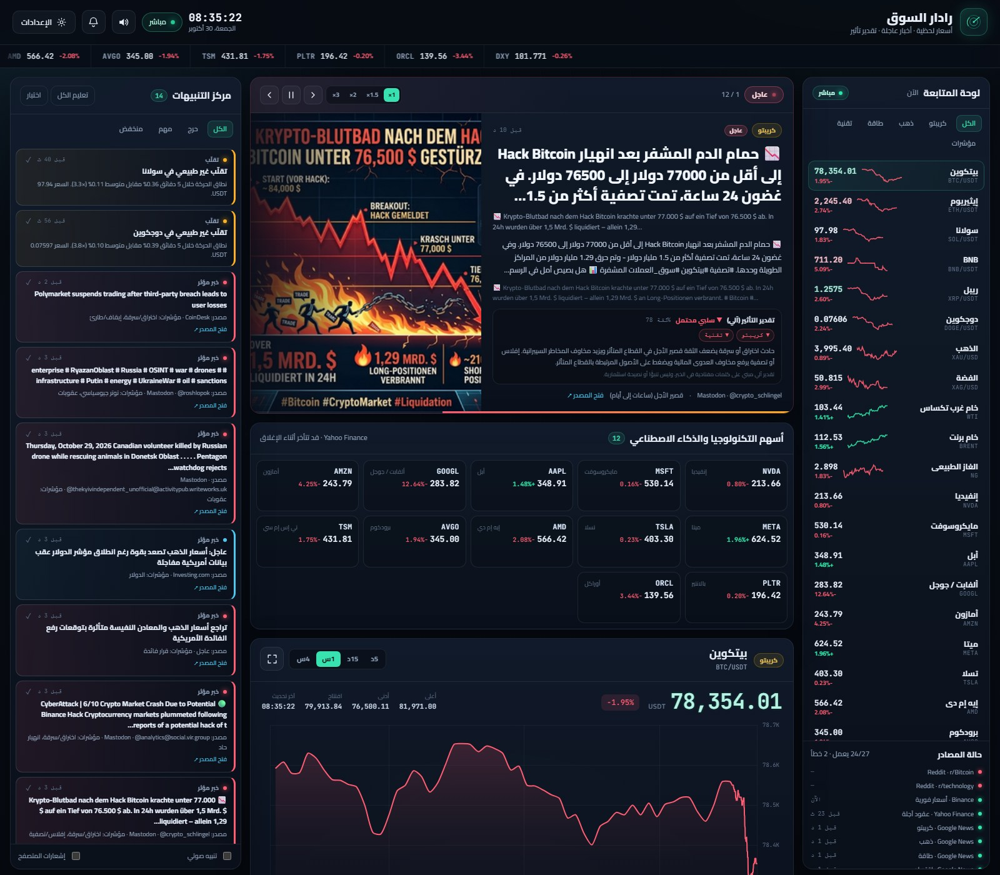

◉
أسعار لحظية
Binance كل ثانية للكريبتو، وYahoo Finance كل 20 ثانية للذهب والفضة والنفط والغاز ومؤشر الدولار. الأسعار الآجلة موضّحة بوضوح.
منصة عربية لمتابعة العملات الرقمية والذهب والطاقة وأسهم التكنولوجيا والذكاء الاصطناعي: أسعار لحظية، أخبار عاجلة بالصور، ترجمة عربية، وتقدير تأثير آلي — بدون تسجيل وبدون أي حزم npm.
لا يبيع ولا يوصي ولا ينفّذ صفقات. بيانات معلوماتية فقط — BTC/USDT · XAU/USD · WTI · NVDA

كل شيء في صفحة واحدة، بواجهة عربية تُبقي الرموز التقنية كما هي.
Binance كل ثانية للكريبتو، وYahoo Finance كل 20 ثانية للذهب والفضة والنفط والغاز ومؤشر الدولار. الأسعار الآجلة موضّحة بوضوح.
شريط «عاجل» دوّار يقدّم أهم الأخبار مع صور حقيقية من المصدر، وتقدير تأثير آلي، وسرعات عرض 1× إلى 3× وإيقاف مؤقت.
NVDA وMSFT وAAPL وGOOGL وMETA وAMZN وTSLA وAMD وAVGO وORCL وTSM وPLTR مع أسعار وتغيّر ومخطط مصغّر.
محرك قواعد ثنائي اللغة يشرح الاتجاه المحتمل والثقة والأصول المتأثرة والسبب — ويُسمّى دائمًا «تقديرًا» وليس تنبؤًا.
ترجمة آلية للعناوين والملخصات مع إبقاء النص الإنجليزي الأصلي. النصوص تُرسل إلى خدمة ترجمة خارجية — يمكن تعطيلها.
حركة سعر، تقلّب غير طبيعي، كلمات أخبار مؤثرة، وحدود سعرية مخصصة. صوت اختياري وإشعارات متصفح، مع فترات تهدئة.
Google News وRSS وReddit وMastodon وHacker News، مع X API رسمي اختياري. لا كشط ولا واجهات غير رسمية.
تخطيط متجاوب بلا تمرير أفقي، وقائمة PWA لإضافته إلى الشاشة الرئيسية، وأزرار لمس واضحة.
خادم Node وحدات مدمجة فقط، وواجهة HTML/CSS/JS خام، وChart.js منسوخ محليًا. لا npm install ولا قاعدة بيانات.
ثلاث خطوات، ثم كل شيء يعمل تلقائيًا.
من أي متصفح على الكمبيوتر أو الجوال. لا تسجيل ولا تثبيت.
اضغط أي أصل أو سهم تقني لعرض رسمه، وفلتر الأخبار حسب الفئة أو «عاجل».
من الإعدادات اضبط الحساسية والحدود السعرية، ثم اسمح بالإشعارات والصوت.
يتطلب Node.js 20 أو أحدث. لا حاجة إلى npm install.
# 1) انسخ المستودع git clone https://github.com/theeteempire/market-radar.git cd market-radar # 2) شغّل الخادم node server.js # 3) افتح المتصفح http://127.0.0.1:8787
ويندوز: استخدم run.bat أو start.ps1. الإعدادات الاختيارية في .env.example.
GitHub Pages يعرض هذه الصفحة فقط؛ التطبيق يحتاج استضافة Node.
الملف render.yaml جاهز. اربط المستودع واضغط Apply.
Deploy to Render ↗الخطة المجانية تنام عند الخمول؛ أول فتح قد يستغرق 30–60 ثانية.
docker build -t market-radar . docker run -d -p 8787:8787 \ -e HOST=0.0.0.0 \ market-radar
دليل كامل: docs/DEPLOY.md
| المتغير | الافتراضي | الغرض |
|---|---|---|
HOST | 127.0.0.1 | للنشر العام اجعله 0.0.0.0 |
PORT | 8787 | المنصات تحقنه عادة تلقائيًا |
TRANSLATE_ENABLED | 1 | الترجمة الآلية (نصوص تخرج لخدمة خارجية) |
IMAGE_ENRICH_ENABLED | 1 | جلب صورة og:image عند غيابها |
X_BEARER_TOKEN | فارغ | X API v2 رسمي فقط (اختياري) |
لا حسابات ولا تتبّع إعلاني. تُرسل عناوين الأخبار غير العربية إلى خدمة ترجمة خارجية عند تفعيل الترجمة، وتُجلب الصور من مواقع المصادر. يمكن تعطيل الترجمة أو إثراء الصور بالكامل من متغيرات البيئة.
افتح النسخة الحية، أو انسخ المستودع وشغّله محليًا في دقيقة.